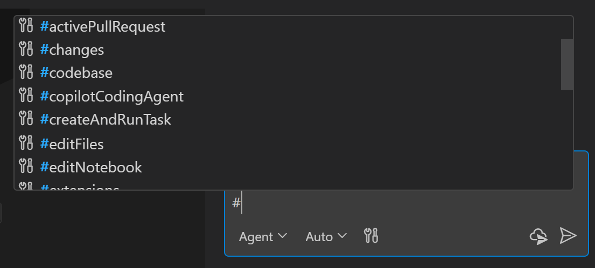
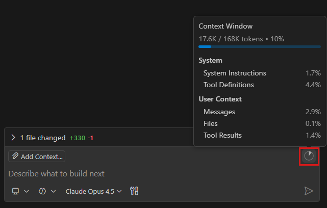

管理 AI 的上下文
通过提供正确的上下文，你可以从 VS Code 中的 AI 获得更相关、更准确的响应。在本文中，你将学习如何在聊天中管理上下文，包括如何使用 #-提及来引用文件、文件夹和符号，如何引用网页内容，以及如何使用自定义指令来指导 AI 的响应。
[!NOTE]
本页中的功能在聊天视图和代理窗口中均可使用。
有关什么是上下文以及 VS Code 如何组合上下文的背景信息，请参阅上下文概念。
#-提及
你可以通过输入 # 后跟要提及的上下文项，显式地向提示中添加上下文。VS Code 支持不同类型的上下文项：文件、文件夹、代码符号、工具、终端输出、源代码管理更改等。
在聊天输入字段中键入 # 符号以查看可用上下文项的列表，或在聊天视图中选择添加上下文以打开上下文选择器。

查看支持的上下文项的完整列表。
将文件添加为上下文
默认情况下，VS Code 使用工作区索引自动将相关文件作为上下文包含进来。但是，你也可以使用 #-提及或上下文选择器显式添加特定的文件、文件夹或符号作为上下文。当问题含糊不清、也可能被视作关于编码实践的一般性问题，而你想确保 AI 在响应中考虑到代码库的特定部分时，这会很有用。
要提供特定的文件、文件夹或符号作为上下文，请使用以下方法之一将它们添加到聊天中：
- 在聊天消息中输入
#后跟文件、文件夹或符号的名称，使用 #-提及来引用它们。
要引用符号，请确保先在编辑器中打开包含该符号的文件。
- 将文件或文件夹从资源管理器视图、搜索视图或编辑器选项卡拖放到聊天视图上，将其添加为上下文。
- 在聊天视图中选择添加上下文，然后从快速选择中选择文件和文件夹或符号。
要显式告知 AI 你想将整个代码库用作上下文，可以在提示中添加 #codebase。
引用来自网页的内容
你可以在聊天提示中引用来自网页的内容，例如获取最新的 API 参考或代码示例。
你可以直接在提示中包含 URL 以获取该网页的信息，或使用 #fetch 工具来表明你想从网页获取内容。例如：
"最新的 VS Code 发布有哪些亮点 #fetch""将 asp.net 应用更新到 .net 9 #fetch https://learn.microsoft.com/zh-cn/aspnet/core/migration/80-90"
VS Code 会在有限时间内缓存网页内容以提高性能。如果页面内容发生变化，你可以通过重启 VS Code 来强制刷新。如果页面无法访问，缓存将在短时间内过期（大约五分钟）。
VS Code 在访问外部 URL 之前会要求确认，以保护你的隐私和安全。详细了解配置 URL 自动批准。
详细了解在聊天中添加和使用工具。
@-提及
聊天参与者是专门的助手，可让你在聊天中提出特定领域的问题。你可以通过 @-提及来调用聊天参与者：输入 @ 后跟参与者名称。VS Code 有内置的聊天参与者，如 @vscode 或 @terminal。它们经过优化，可以回答各自领域的问题。
以下示例展示了如何在聊天提示中使用 @-提及：
"@vscode 如何启用自动换行""@terminal 当前目录中最大的 5 个文件是什么"
在聊天输入字段中键入 @ 以查看可用聊天参与者的列表。
扩展也可以贡献自己的聊天参与者。
视觉（预览版）
聊天支持视觉功能，这意味着你可以将图像作为上下文附加到聊天提示中，并就图像提出问题。例如，附加一段代码的截图并请 AI 解释它，或附加一个 UI 草图并请代理实现它。
[!TIP]
你可以将图像从网页浏览器拖放到聊天视图上，将其添加为上下文。
添加浏览器上下文（实验性功能）
VS Code 有一个内置的集成浏览器，你可以用它来在 VS Code 内部预览和与网页交互，例如对 Web 应用程序进行快速测试和调试。
浏览器工具栏上有一个添加到聊天拆分按钮，其中的操作可以让你将当前页面上不同类型的上下文添加到聊天提示中：
- 将元素添加到聊天：从页面中选择 HTML 元素添加为上下文，包括其 CSS 样式和截图。
- 将截图添加到聊天：捕获当前浏览器视口的截图并将其作为图像附加。
- 将控制台日志添加到聊天：捕获页面的控制台输出并将其附加为上下文，对于调试运行时错误非常有用。
要将集成浏览器中的元素添加到聊天提示中：
- 启动你的 Web 应用程序。
- 通过从命令面板运行浏览器：打开集成浏览器命令来打开集成浏览器。
- 输入你要交互的网页的 URL。
- 选择将元素添加到聊天按钮。现在你可以将鼠标悬停在网页的元素上并选择它们，将其作为上下文添加到聊天提示中。
你可以配置添加元素时包含哪些信息：
- 附加 CSS：
setting(chat.sendElementsToChat.attachCSS)设置 - 附加图像：
setting(chat.sendElementsToChat.attachImages)设置
详细了解浏览器到聊天的操作。
与浏览器页面交互
[!NOTE]
代理的浏览器工具目前为实验性功能。
代理可以通过使用内置的浏览器工具直接读取集成浏览器中的页面并与之交互。这使得代理无需外部 MCP 服务器即可导航到 URL、读取页面内容和控制台错误、截图、点击元素、输入文本等。
要启用浏览器工具，请将 setting(workbench.browser.enableChatTools) 设置设为 true。
你还可以与代理共享你已经打开的浏览器页面。选择浏览器工具栏中的与代理共享按钮，让代理访问你的页面，包括你现有的会话和登录状态。代理还可以检测未共享的选项卡，并在需要时提示你共享，例如当你引用代理无法看到的页面时。
例如，你可以要求代理打开你的 Web 应用，检查布局问题，或验证某个功能是否正常工作。代理会打开浏览器，与页面交互，并报告其发现。
详细了解代理的浏览器工具。
监控上下文窗口使用情况
聊天输入框显示一个上下文窗口控件，用于显示模型上下文窗口的使用量。此可视化指示器可帮助你了解聊天摘要何时可能发生，或何时应开始新的会话。

上下文窗口控件提供以下信息：
- 可视化填充指示器：带阴影的条形图显示当前正在使用的上下文窗口比例
- 悬停时显示总使用量和细分：将鼠标悬停在控件上可查看以总可用上下文的分数形式表示的准确令牌计数（例如，15K/128K），以及按类别的使用量细分
随着你在对话中发送更多请求，控件会更新以反映不断增加的上下文使用量。总可用上下文（分母）会根据你选择的 AI 模型而变化，因为不同的模型有不同的上下文窗口大小。
[!TIP]
当上下文窗口填满时，VS Code 会自动压缩对话历史记录以释放空间。
上下文压缩
随着对话的增长，累积的消息和上下文可能会填满模型的上下文窗口。上下文压缩会总结对话历史记录以释放空间，这样你可以在不丢失重要细节的情况下继续在同一会话中工作。压缩还会减少每个后续请求发送的令牌数量，这有助于管理 AI 点数消耗。
自动压缩
当上下文窗口填满时，VS Code 会通过总结早期的消息来自动压缩对话。这在后台透明地发生，因此你可以继续聊天而不会中断。
要禁用自动压缩，请将 setting(github.copilot.chat.summarizeAgentConversationHistory.enabled) 设为 false。
手动压缩
你也可以随时手动触发压缩，例如重新聚焦对话或减少早期交流中的干扰。手动压缩可用于本地、后台和 Claude 代理会话。
要手动压缩对话，请使用以下方法之一：
- 在聊天输入字段中键入
/compact。选择性地在命令后添加自定义指令来指导摘要的生成方式，例如/compact 重点关注数据库架构决策。 - 选择聊天输入框中的上下文窗口控件，然后选择压缩对话。
如果你希望完全重置上下文，请开始一个新的聊天会话。